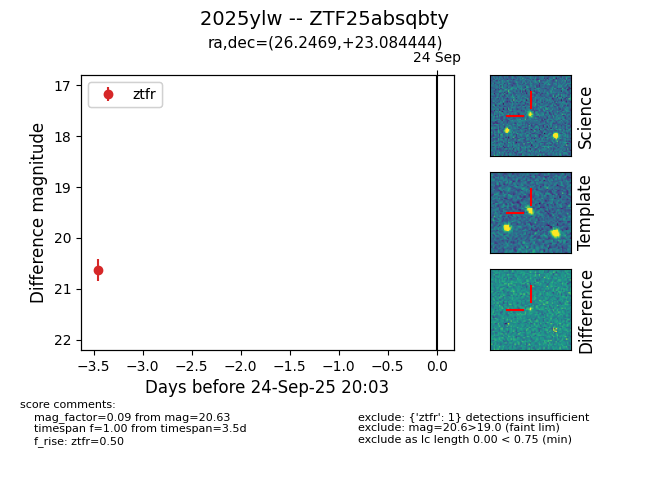

FINK: ZTF25absqbty
Lasair: ZTF25absqbty
ALeRCE: ZTF25absqbty
TNS: 2025ylw
YSE: 2025ylw
ZTF25absqbty (ztf,fink)
2025ylw (tns,yse)
equatorial (ra, dec) = (26.2469,+23.08444)
galactic (l, b) = (138.6463,-38.14778)

last ztfr=20.63
1 ztfr detections